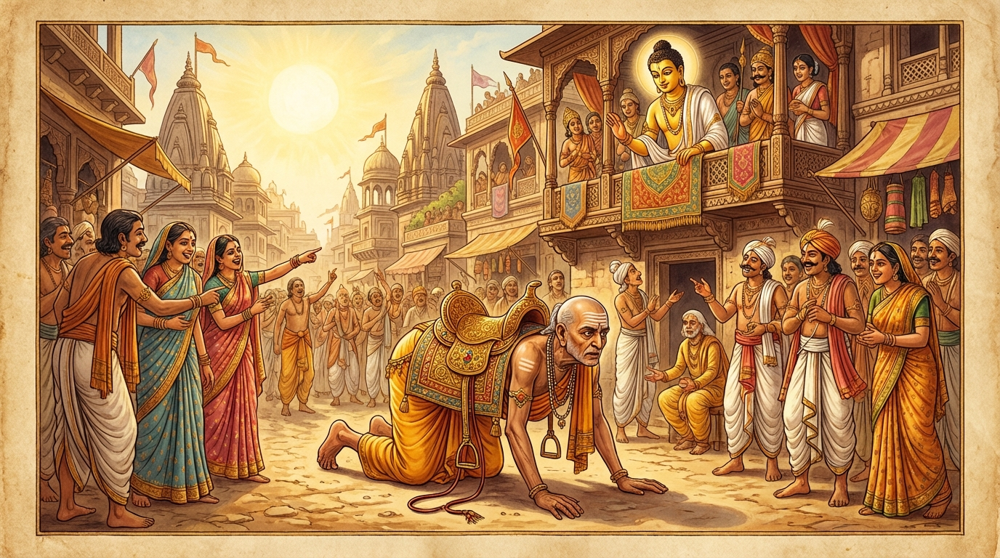

1. රුහක ජාතකය (191)
“අපි රුහක ඡින්නාපි” (එම්බා රුහක! සිඳී ගියත්) යනාදී මෙම ධර්ම දේශනාව, බුදුරජාණන් වහන්සේ ජේතවනාරාමයේ වැඩ වාසය කරන සමයේ දී, පැරණි භාර්යාව විසින් භික්ෂුවක් පෙළඹවීමක් අරභයා වදාළ සේක. මෙහි විස්තර කථාව අටවන නිපාතයේ එන ඉන්ද්රිය ජාතකයේ (ජාතක අංක: 1.8.60 ආදිය) මතු සඳහන් වන්නේය. බුදුරජාණන් වහන්සේ ඒ භික්ෂුව අමතා, “මහණ! මේ ස්ත්රිය ඔබට අනර්ථකාරීය. පෙර ආත්මයකත් ඇය ඔබව රජු සහිත පිරිස් මැද ලජ්ජාවට පත් කරවා, නිවසින් පන්නා දමන ආකාරයේ දෙයක් සිදු කළා” යැයි වදාරා, එම අතීත කථාව ගෙනහැර දැක්වූ සේක.
අතීතයේ බරණැස් නුවර බ්රහ්මදත්ත රජු රාජ්ය කරන සමයේ, අප මහා බෝසතාණන් වහන්සේ ඔහුගේ අගමෙහෙසියගේ කුසෙහි පිළිසිඳගෙන උපත ලැබ, වැඩිවියට පත්ව, පියාගේ අභාවයෙන් පසු රාජ්යත්වයට පත්ව දැහැමින් රාජ්ය කළ සේක. ඔහුට ‘රුහක’ නම් පුරෝහිත බමුණෙක් සිටියේය. ඒ රුහකට ‘පුරාණී’ නම් බැමිණිය භාර්යාව වූවාය. රජතුමා බමුණාට අශ්ව ආභරණවලින් අලංකාර කොට අශ්වයෙකු දුන්නේය. බමුණා ඒ අසු පිට නැගී රජුට උපස්ථාන කිරීමට යයි. ඉක්බිති ඔහු අලංකාර කරන ලද අශ්වයාගේ පිටෙහි හිඳගෙන යන එන අයුරු දැක, ඒ ඒ තැන සිටි මිනිස්සු, “අනේ! අශ්වයාගේ රූප ශෝභාව! අනේ! අශ්වයා බබළන අයුරු!” යනුවෙන් අශ්වයාටම ප්රශංසා කරති. බමුණා නිවසට පැමිණ ප්රාසාදයට නැග භාර්යාව ඇමතීය. “සොඳුරිය! අපගේ අශ්වයා ඉතා හොබනේය. මග දෙපස සිටි මිනිස්සු අපගේ අශ්වයාම වර්ණනා කරති.” ඒ බැමිණිය වනාහි මඳක් කොර වූ, ධූර්ත ස්වභාව ඇති (නොමනා පැවතුම් ඇති) තැනැත්තියකි. එබැවින් ඇය ඔහුට මෙසේ කීවාය. “ආර්යයෙනි! ඔබ අශ්වයා ශෝභමාන වීමට හේතුව නොදන්නෙහිය. මේ අශ්වයා බබළන්නේ තමන් පැළඳ සිටින අලංකාර අශ්ව ආභරණ නිසාය. ඉදින් ඔබද අශ්වයෙකු මෙන් බබළන්නට කැමති නම්, අශ්ව ආභරණ පැළඳගෙන ඇතුල් වීථියට බැස, අශ්වයෙකු මෙන් පා තබමින් (කොටමින්) ගොස් රජතුමා දකින්න. එවිට රජතුමාද ඔබව වර්ණනා කරනු ඇත. මිනිස්සුද ඔබවම වර්ණනා කරනු ඇත.”
ඒ මෝඩ (බොළඳ) ස්වභාව ඇති බමුණා ඇගේ කීම අසා, “ඈ මට මේ දෙය කියන්නේ සැබෑවටම මේ හේතුව නිසාය” යැයි නොදැන, එය සත්යයක් යැයි සිතා ඇය කී පරිදිම කළේය. ඔහු දකින දකින අය පරිහාසයට සිනාසෙමින්, “ආචාර්යතුමා ශෝභමානය!” යැයි කීහ. රජතුමා වනාහි ඔහු දැක, “ඇයි ආචාර්යතුමනි, ඔබේ පිත කිපුනේද? උමතු වූවෙහිද?” ආදිය කියා ලජ්ජා කළේය. එවිට බමුණා, “මවිසින් නුසුදුසු දෙයක් කරන ලදී” යැයි ලජ්ජාවට පත්ව, බැමිණිය කෙරෙහි කිපී, “තී විසින් රජතුමා ඇතුළු පිරිස මැද මම ලජ්ජාවට පත් කරවන ලද්දෙමි. තීට තලා පෙළා නිවසින් පන්නා දමන්නෙමි”යි සිතා නිවසට ගියේය. ඒ ධූර්ත බැමිණිය ඔහු කිපී එන බව දැන, කල් ඇතිවම කුඩා දොරටුවකින් නික්මී රාජ මාලිගයට ගොස් දින හතරක් පහක් එහිම රැඳී සිටියාය. රජතුමා ඒ කාරණය දැන පුරෝහිතයා කැඳවා, “ආචාර්යතුමනි, ස්ත්රීන්ට ස්වභාවයෙන්ම දොස් ඇත්තේමය. බැමිණියට සමාව දීම වටී” යයි සමාව ලබා දීම පිණිස පළමු වන ගාථාව වදාළ සේක.

“එම්බා රුහක! (දුන්නේ) ලනුව කැඩී ගියත් එය නැවත ගැටගසා සන්ධි කරනු ලැබේ. (එසේම) ඔබද පැරණි භාර්යාව (පුරාණී) සමඟ නැවත එක්වන්න. ක්රෝධයට වසඟ නොවන්න.”
යනුවෙන් මෙම පළමු ගාථාව වදාළ සේක.
මෙහි කෙටි අර්ථය මෙසේය: “එම්බා රුහක! දුන්නේ දිය (ලනුව) කැඩී ගියත් එය නැවත එකට සම්බන්ධ කරනු (ගැටගසනු) ලැබේ. එසේම ඔබද පුරාණී නම් භාර්යාව සමඟ එක්වන්න (සමගි වන්න). ක්රෝධයට වසඟ නොවන්න.”
එය අසා රුහක බමුණා දෙවන ගාථාව මෙසේ කීවේය.
“දුනුදිය තැනීමට ‘මරුවා’ නම් වැහැරි ඇති කල්හි, දුනුදිය සාදන ශිල්පීන් ඇති කල්හි, මම වෙනත් දුනුදියක් (ලනුවක්) කරවා ගන්නෙමි. ‘පුරාණී’ නම් භාර්යාවගෙන් මට තවදුරටත් වැඩක් නැත (ඇය මට එපා).”
යනුවෙන් මෙම දෙවන ගාථාව කීවේය.
එහි අර්ථය නම්: “මහරජ! මරුවා නම් වැහැරි ද, දුනුදිය සාදන මිනිසුන් ද ඇති කල්හි මම වෙනත් දුනුදියක් (ලනුවක්) කරවා ගන්නෙමි. කැඩී ගිය, පැරණි වූ මෙම දුනුදියෙන් (භාර්යාවගෙන්) මට කම් නැත. මට ඇගෙන් කිසිදු ප්රයෝජනයක් නැත.” මෙසේ කියා රුහක බමුණා ඇයව නිවසින් නෙරපා හැර, වෙනත් බැමිණියක් ගෙන ආවේය.
බුදුරජාණන් වහන්සේ මෙම ධර්ම දේශනාව ගෙනහැර දක්වා, චතුරාර්ය සත්යය ප්රකාශ කොට ජාතක කථාව නිමවා වදාළ සේක. චතුරාර්ය සත්ය දේශනාව අවසානයේ (ශාසනය පිළිබඳ) කලකිරුණු භික්ෂුව සෝවාන් ඵලයෙහි පිහිටියේය. “එකල පුරාණී නම් බැමිණිය වූයේ අද මේ පුරාණ දූතිකාවයි (කලින් බිරිඳයි). රුහක බමුණා නම් මේ කලකිරුණු භික්ෂුවයි. බරණැස් රජු වනාහි මම ම වෙමි” යි වදාළ සේක.
පළමු වන රුහක ජාතක වර්ණනාවයි.